PBR MATERIALS
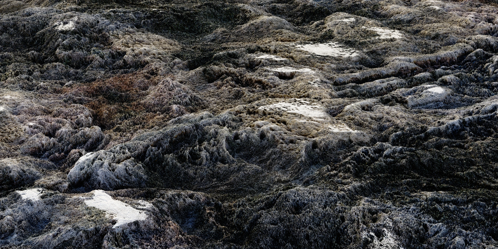
Selections from an extensive in-house library of custom-made textures and high-quality PBR materials, rendered in Cycles — St. John's Cathedral gold, Arran cave wall, Virginia creekside, sci-fi deco, corroded bronze, a cuneiform tablet, Morgan Library stained glass, the Versailles ceiling, and more. Every material is seamless and tileable.
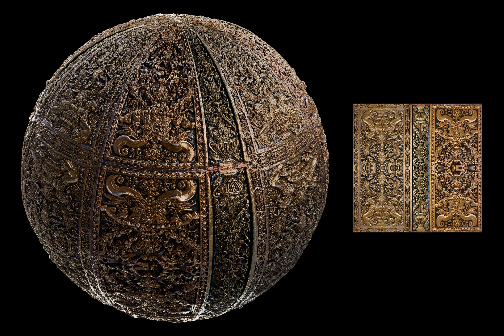
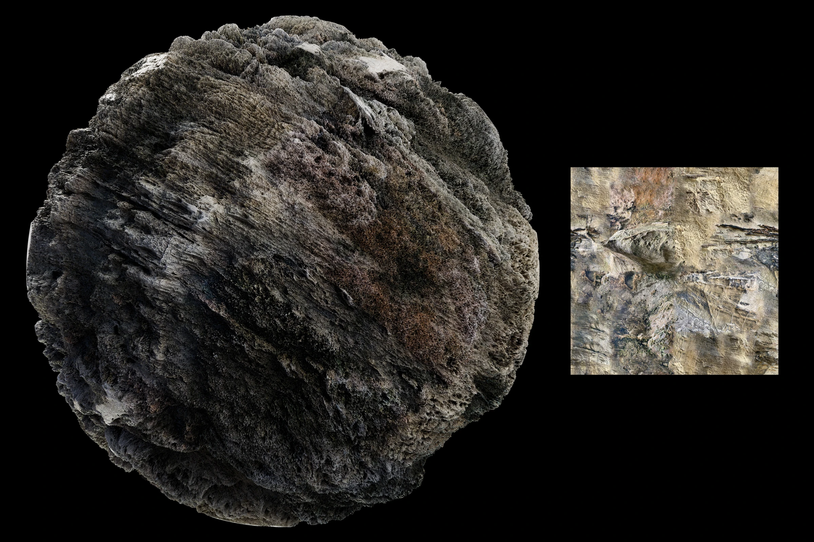
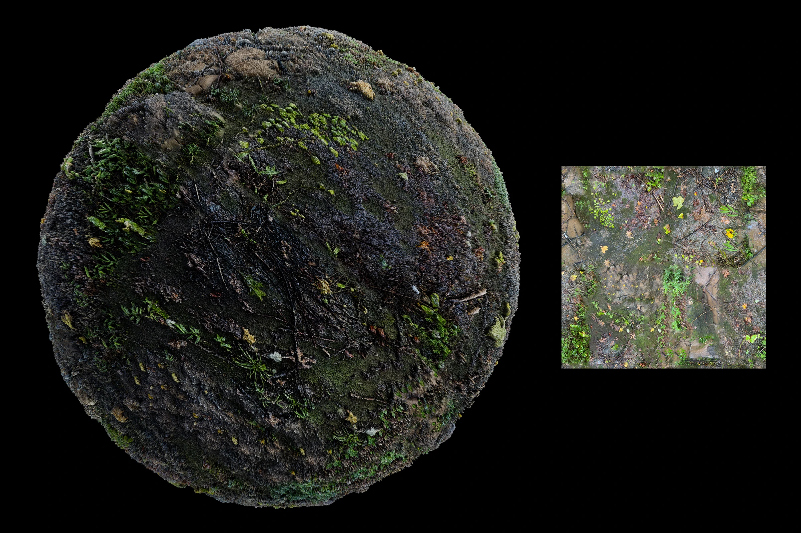
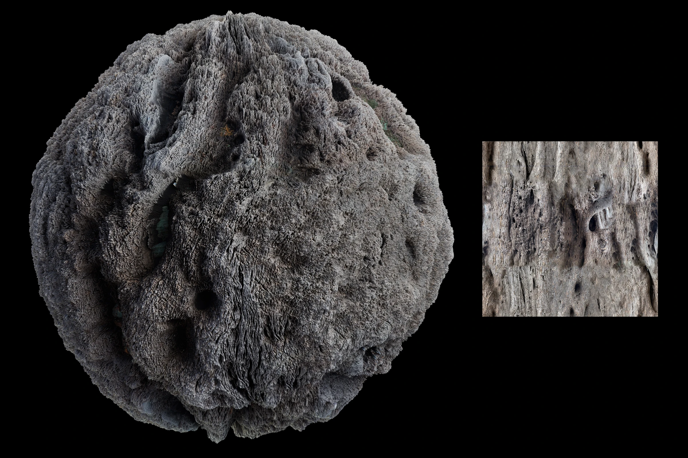
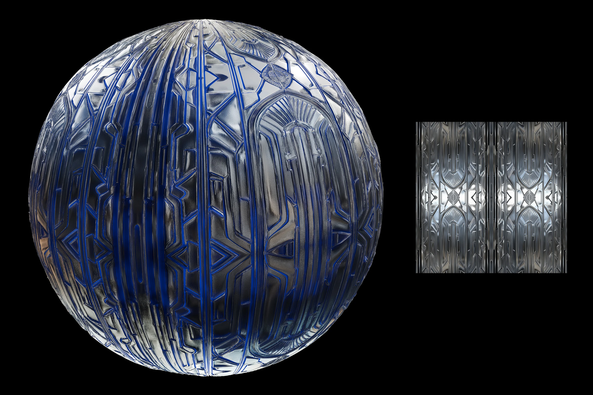
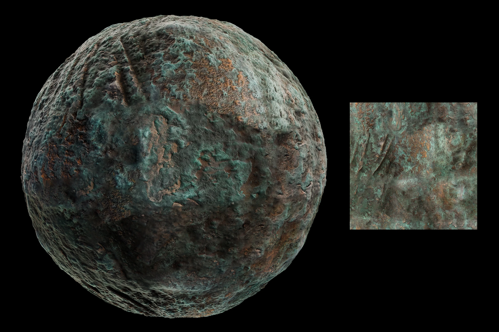
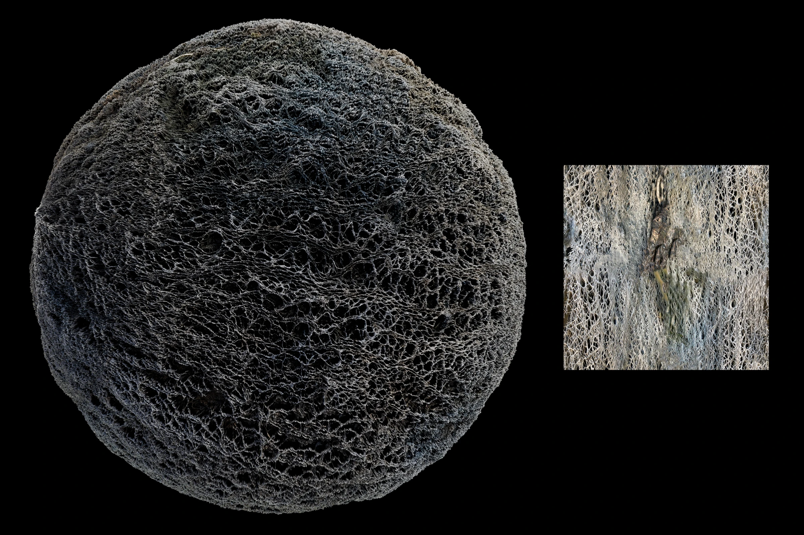
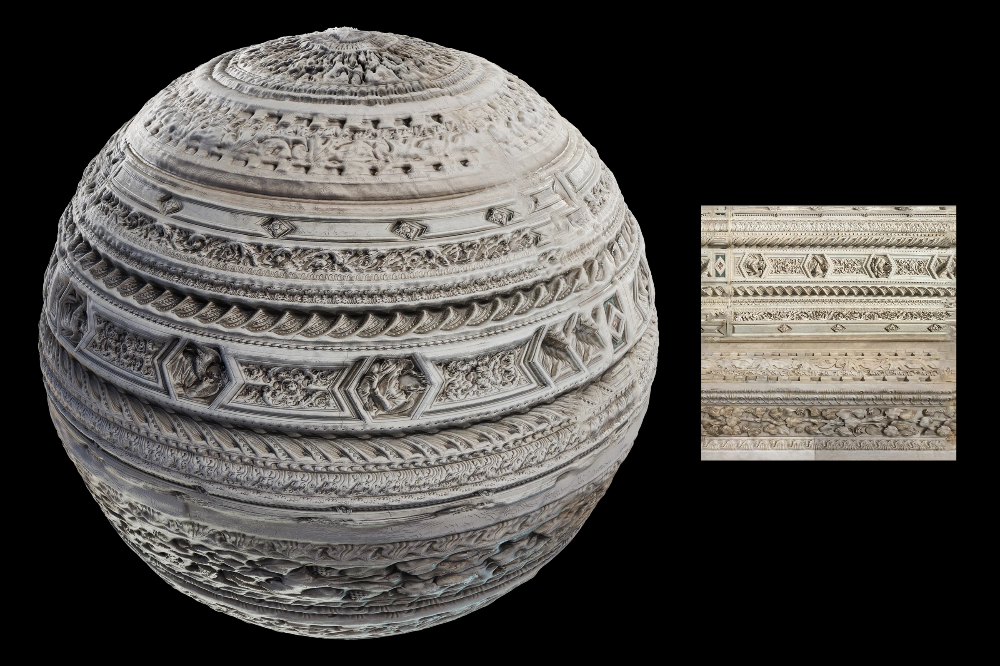
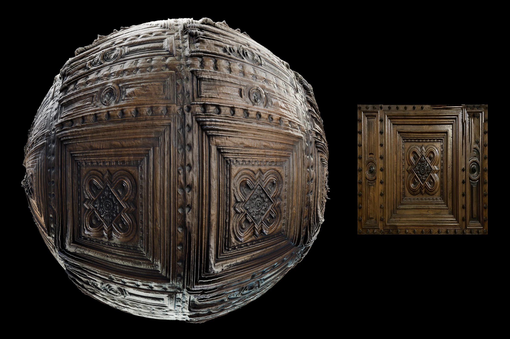
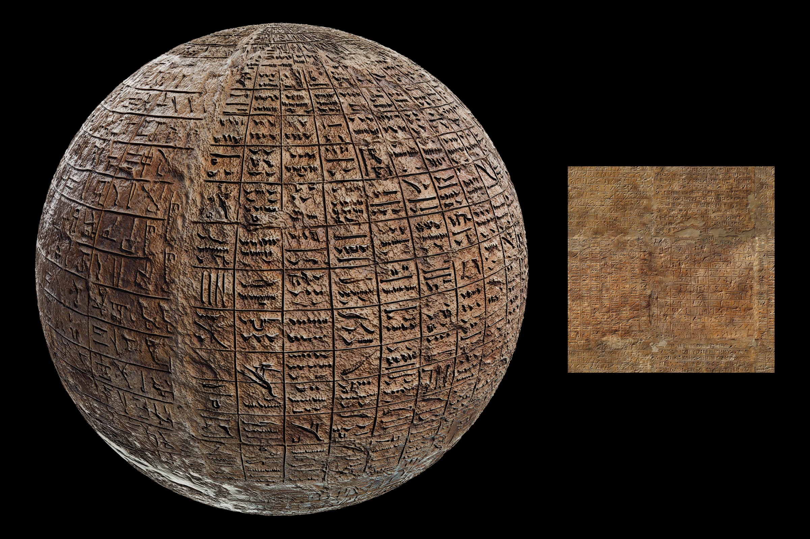
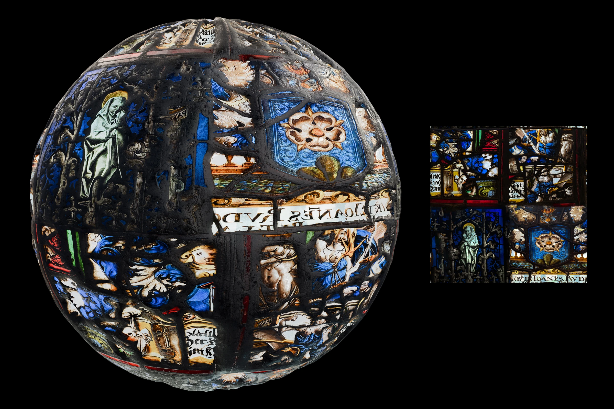
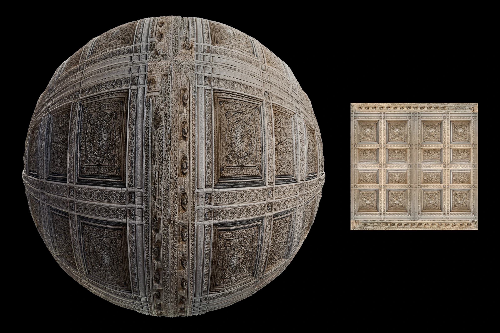